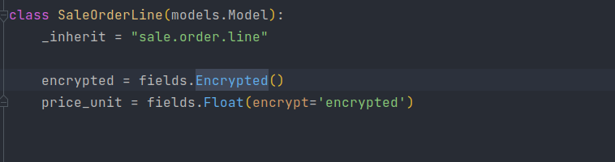
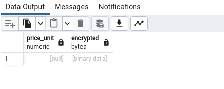

With this module user can store encrypted field value in database.
So no one can see the value from database.
Multiple fields can be stored inside single Encrypted Field.
Just before storing to database, fields gets serialized, and encrypted.
On the other hand, after reading, encrypted field gets decrypted and
deserialized and values are available in each field in original form.
I this module encrypted field uses symetrical AES algorithm and .
field_encryption.key file next to the Odoo
configuration file. Each database stores its absolute path
in field_encryption.key_path. The file keeps
previous keys needed to read existing encrypted values and
is created with owner-only permissions. Include it in
backups and do not delete it while encrypted values exist.field_encryption.key_path to the absolute path
of the original key file.User need to define one additional field with 'Encrypted' type. Then need to add an attribute "encrypt='encrypted'", in the field which will be encrypted. Code as like the image.


Main field value will be pass to encrypted field and it will retriv value when its need.